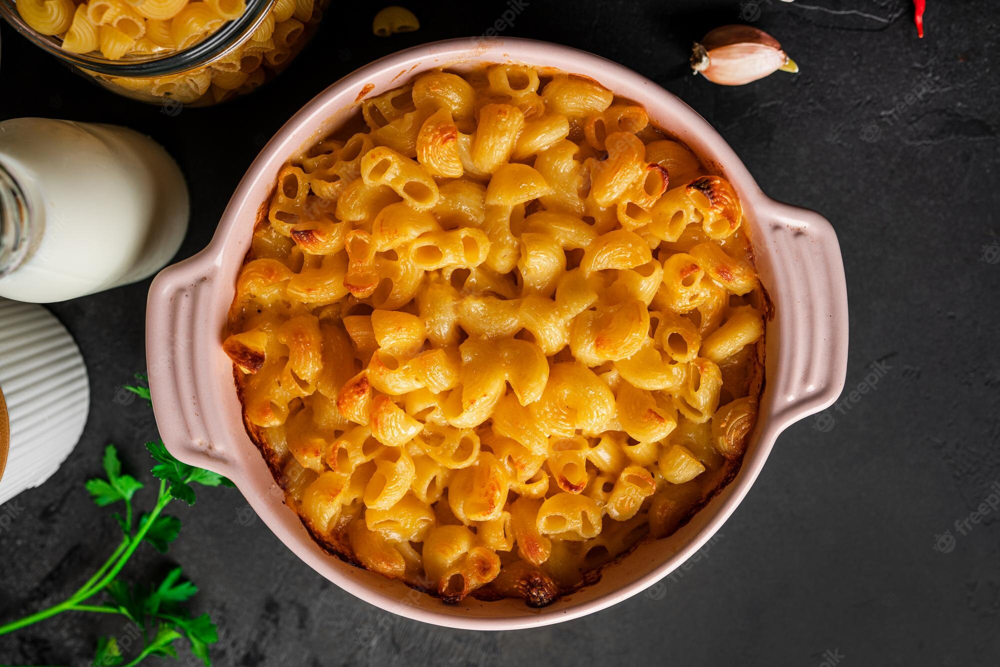

Macarrão com queijo, hmmmmm!

Macarrão com queijo é um prato muito conhecido, facil de fazer e delicioso!
Ingredientes:
- 1 pacote de macarrão cozido
- 1 colher (sopa) de manteiga
- sal a gosto
- 1 caixinha de creme de leite
- 1 xícara (chá) de leite
- 1 xícara (chá) de queijo prato ralado
- 1 xícara (chá) de queijo provolone ralado
- 1 xícara (chá) de queijo parmesão ralado
Modo de preparo:
- Em uma panela derreta a manteiga, junte o creme de leite e o leite.
- Aqueça, porém sem deixar ferver.
- Adicione os queijos, coloque sal a gosto.
- Misture o macarrão à essa mistura.
- Sirva quente.
Home